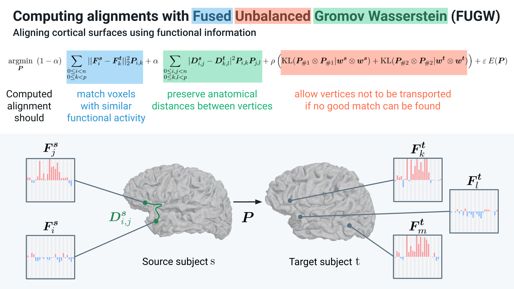

Introduction#
Optimization problem#
{kind=link}
In short, this code computes a matrix \(P\) that matches points of two distributions \(s\) and \(t\). \(P\) is referred to as the transport plan.
We denote as \(n\) and \(m\) the number of points (we will also call them vertices or voxels) of \(s\) and \(t\) respectively.
Two points \(i\) and \(j\), from \(s\) and \(t\) respectively, are matched based on similarity between their respective features \(F_i^s\) and \(F_j^t\) (Wasserstein loss). We fuse this loss with one that tries to preserve the respective underlying geometries of these two distributions. We represent these geometries as kernel matrices \(D^s\) and \(D^t\) in the figure below. In essence, two points which were distant from one another in the first distribution should be matched to points which are distant from one another in the second distribution (Gromov-Wasserstein loss). Finally, the unbalancing part of this problem allows to leave points of the first and/or the second distribution for which no good match can be found.
Details about the implementation and motivations are available in the original NeurIPS 2022 paper presenting this work (Thual, Tran et al. 2022) [1], in which we align cortical structures of human individuals using this method. In this case, we match areas of the cortex based on similarity of their functional activity (ie how they behave throughout a series of experiments) while trying to preserve the anatomy of the cortex.
Solvers#
Wasserstein (W) problems are convex. This class of problems is well understood, and a multitude of solvers exist to compute or approximate good solutions. For instance, Sinkhorn solvers, which were first applied to W problems in (Cuturi 2013) [2], have proved to be very efficient.
Unfortunately, Gromov-Wasserstein (GW) problems are non-convex, consequently FUGW problems are non-convex too. To circumvent this issue, authors in (Séjourné et al. 2021) [3] derive a lower-bound of GW by reformulating it as a bi-convex problem. In short, instead of looking for a transport plan \(P\) minimizing GW losses such as \(\sum_{i,j,k,l} |D^s_{i,j} - D^t_{k,l}| P_{i,k} P_{j,l}\), one can look for 2 transport plans \(P\) and \(Q\) minimizing \(\sum_{i,j,k,l} |D^s_{i,j} - D^t_{k,l}| P_{i,k} Q_{j,l}\). Note that if one imposes that \(P=Q\), the two problems are equivalent. In their paper, authors relax this constraint and only impose that the mass of each plan is equal (ie \(\text{m}(P) = \text{m}(Q)\)) and the problem is now convex in \(P\) and in \(Q\). Finally, they derive a block-coordinate-descent (BCD) algorithm in which they alternatively freeze the value of \(P\) (resp. \(Q\)) while running a convex-problem solver (in their case it’s a sinkhorn algorithm) to optimize \(Q\) (resp. \(P\)).
In this work, we adapt the previous approach to approximate solutions to FUGW losses. Moreover, we provide multiple solvers to run inside the BCD algorithm. Namely, we provide:
sinkhorn: the classical Sinkhorn procedure described in (Chizat et al. 2017) [7]mm: a majorize-minimization algorithm described in (Chapel et al. 2021) [4]ibpp: an inexact-bregman-proximal-point algorithm described in (Xie et al. 2020) [5]
References#
[1] Thual, Alexis, Huy Tran, Tatiana Zemskova, Nicolas Courty, Rémi Flamary, Stanislas Dehaene, and Bertrand Thirion. ‘Aligning Individual Brains with Fused Unbalanced Gromov-Wasserstein’. arXiv, 19 June 2022. https://doi.org/10.48550/arXiv.2206.09398.
[2] Cuturi, Marco. ‘Sinkhorn Distances: Lightspeed Computation of Optimal Transport’. Advances in Neural Information Processing Systems 26 (2013). https://doi.org/10.48550/arXiv.1306.0895.
[3] Sejourne, Thibault, Francois-Xavier Vialard, and Gabriel Peyré. ‘The Unbalanced Gromov Wasserstein Distance: Conic Formulation and Relaxation’. In Advances in Neural Information Processing Systems, 34:8766–79. Curran Associates, Inc., 2021. https://proceedings.neurips.cc/paper/2021/hash/4990974d150d0de5e6e15a1454fe6b0f-Abstract.html.
[4] Chapel, Laetitia, Rémi Flamary, Haoran Wu, Cédric Févotte, and Gilles Gasso. ‘Unbalanced Optimal Transport through Non-Negative Penalized Linear Regression’. In Advances in Neural Information Processing Systems, 34:23270–82. Curran Associates, Inc., 2021. https://proceedings.neurips.cc/paper/2021/hash/c3c617a9b80b3ae1ebd868b0017cc349-Abstract.html.
[5] Xie, Yujia, Xiangfeng Wang, Ruijia Wang, and Hongyuan Zha. ‘A Fast Proximal Point Method for Computing Exact Wasserstein Distance’. In Proceedings of The 35th Uncertainty in Artificial Intelligence Conference, 433–53. PMLR, 2020. https://proceedings.mlr.press/v115/xie20b.html.
[6] Platt, John. ‘FastMap, MetricMap, and Landmark MDS Are All Nystrom Algorithms’, 1 January 2005. https://www.microsoft.com/en-us/research/publication/fastmap-metricmap-and-landmark-mds-are-all-nystrom-algorithms/.
[7] Chizat, Lenaic, Gabriel Peyré, Bernhard Schmitzer, and François-Xavier Vialard. ‘Scaling Algorithms for Unbalanced Transport Problems’. arXiv, 22 May 2017. https://arxiv.org/abs/1607.05816.